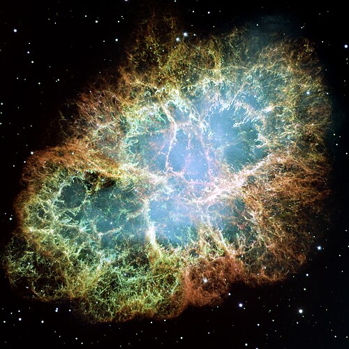
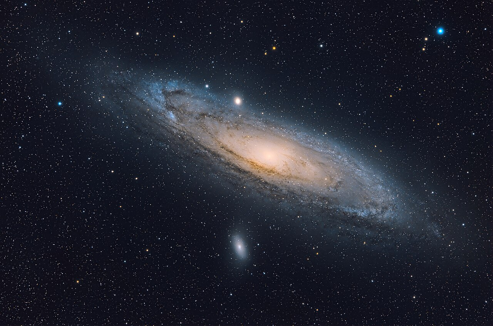
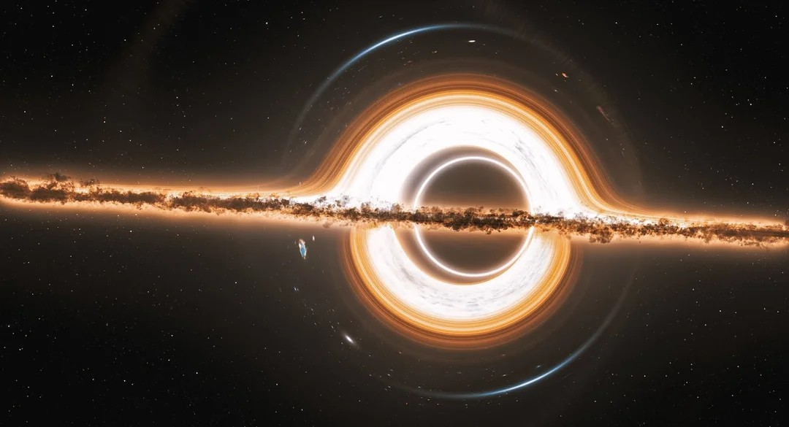
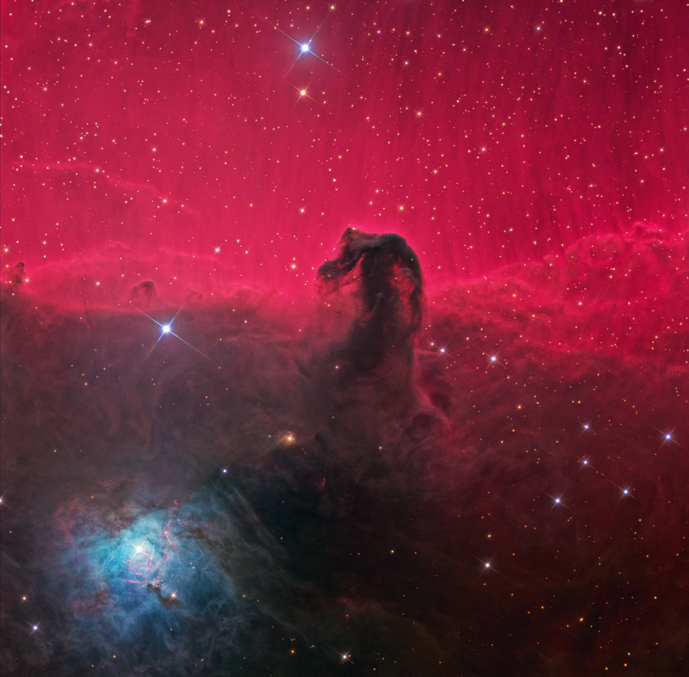
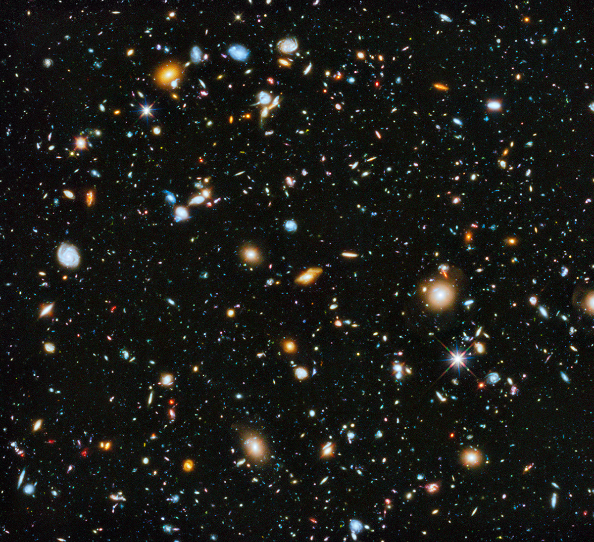
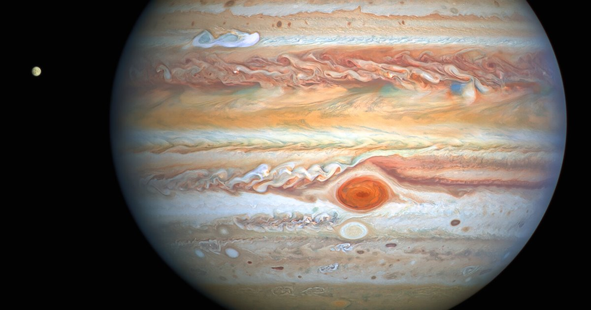
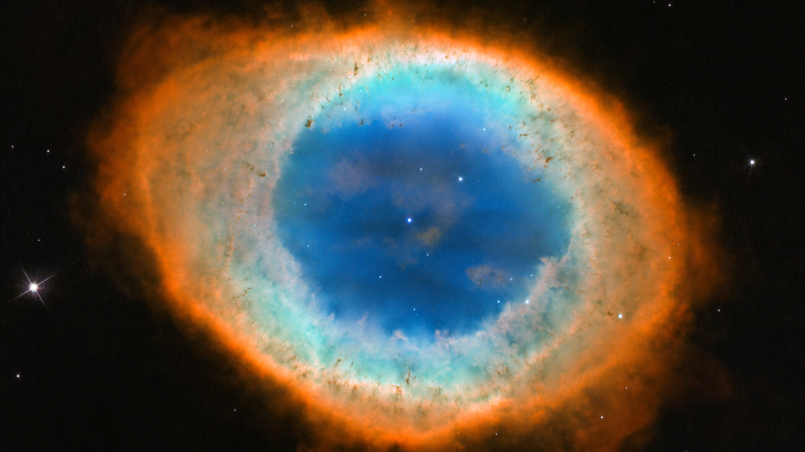

Galería Cósmica

Pilares de la Creación
Una de las imágenes más famosas del Hubble. Son gigantescas columnas de gas y polvo interestelar en la Nebulosa del Águila, donde nacen nuevas estrellas.

Nebulosa del Cangrejo
El remanente de una supernova observada en la Tierra en el año 1054. En su centro se encuentra un púlsar que gira 30 veces por segundo.

Galaxia de Andrómeda
La galaxia espiral más cercana a la nuestra, a 2.5 millones de años luz. Está en curso de colisión con la Vía Láctea, un evento que ocurrirá en 4.5 mil millones de años.

Agujero Negro (Gargantúa)
Una famosa visualización científica de un agujero negro supermasivo, creada para la película Interstellar, que muestra cómo la gravedad curva la luz del disco de acreción.

Nebulosa Cabeza de Caballo
Parte de la nube molecular de Orión, esta icónica nebulosa oscura tiene su forma por la silueta de una densa nube de gas y polvo frente a la nebulosa de emisión IC 434.

Campo Profundo del Hubble
Una imagen de una pequeña región en la constelación de la Osa Mayor, que revela miles de galaxias. Es una de las imágenes más importantes en la historia de la astronomía.

Júpiter y su Gran Mancha Roja
El planeta más grande del sistema solar, un gigante gaseoso cuya atmósfera presenta una gigantesca tormenta anticiclónica conocida como la Gran Mancha Roja, activa durante siglos.

Nebulosa del Anillo (M57)
Una nebulosa planetaria en la constelación de Lyra. Es el remanente de una estrella similar al Sol que ha expulsado sus capas exteriores al final de su vida.